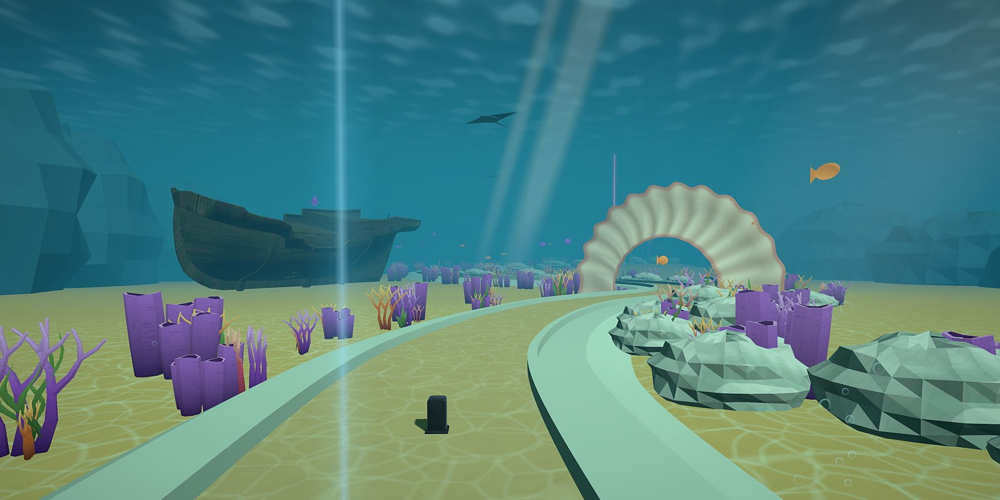

The Crazy Golf VR rebuild — one swing, one fix, one update at a time.
Crazy Golf VR is in open development and we're tuning every detail with community feedback. After 60,000+ installs and a stack of honest reviews, the swing, the hole markers, the club grip, and the audio are being rebuilt — bringing the version you've been asking for.
- Quest Native Built for Meta Quest 2, 3, and Pro.
- Shaped by Feedback 60,000+ installs and every honest review guide the fixes.
- Open Development Updates ship as they're ready — tell us what's still off.

From the current build of Crazy Golf VR.
See where the rebuild is heading
Crazy Golf VR is being rebuilt on Meta's latest XR stack — sharper swing physics, hole markers you can actually see, a club that sits naturally in your hand, and audio rebalanced so it stays calm wherever the ball lands. Here's where the next update is heading.
- Native on Meta Quest 2, 3, and Pro.
- Swing physics, club grip, and hole markers rebuilt from scratch.
- Audio rebalanced — calmer when the ball wanders off-course.
Why you'll love Crazy Golf VR
Shots that read clean
Hole markers, line-of-sight cues, and feedback you can act on. No more guessing where to aim.
A swing that matches your motion
Club grip, ball physics, and the swing arc are being rebuilt from scratch — so the shot you take is the shot that lands.
Built in the open
Every patch is shaped by what players tell us. The roadmap moves with the reviews — and the patch notes ship with every release.

60,000+ installs. A few honest reviews. One rebuild.
Every review — including the one-star ones — made the next patch sharper. We read them, we replied, and now the parts that didn't land are being rebuilt: the swing, the markers, the grip, the audio. If you've played Crazy Golf VR before, the next update is for you.
- Reviewer-led fixes Every call-out from the store became a checklist item.
- Made for all ages Kids and grown-ups share the green, with age-appropriate, safety-first multiplayer.
- Free, live, and yours Crazy Golf VR stays free on Meta Quest while the rebuild rolls out.
Inside the experience